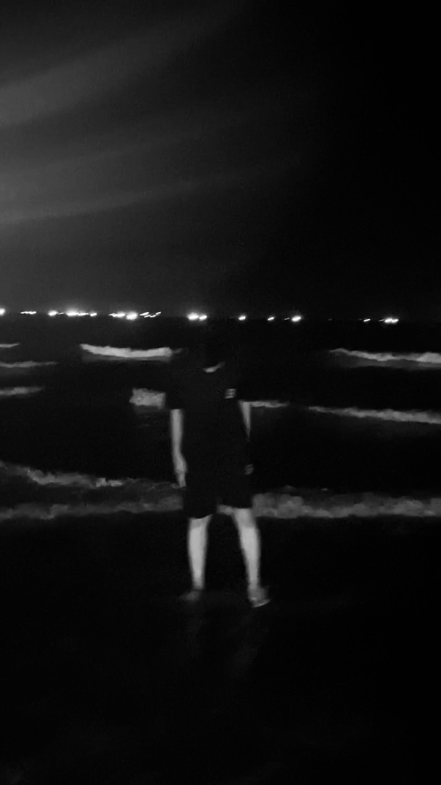

📖 Giới thiệu về tớ

Mình là Luonghii. 🌸
Mỗi bức ảnh, mỗi dòng chữ trong kỷ yếu này là một phần ký ức quý giá. Chúng ta không chỉ học cùng nhau, mà còn trưởng thành cùng nhau – dưới mái trường DK60 thân yêu. ❤️
"Chúng ta đi qua thanh xuân không phải để nhớ, mà để mỉm cười mỗi khi nhớ về."